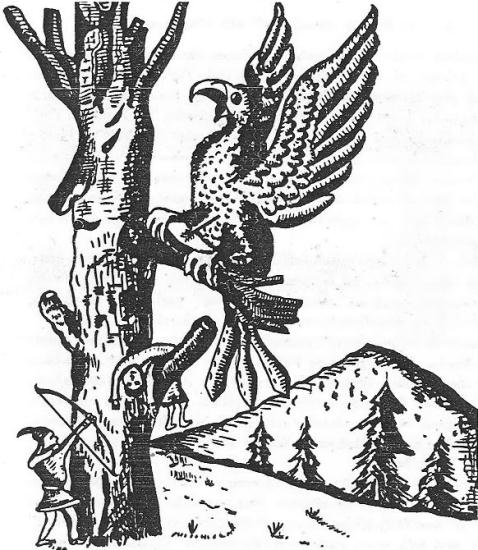

Aşağıdaki bu çok güzel Altay destanının baş kısımları, Oğuz'un çocukluk ve gençlik çağlarını hatırlatan güzel bir örnektir. Bu masal W. Radlof tarafından Altay'daki Urussul bölgesinde derlenmiştir. Uygur harfleri ile yazılmış olan Oğuz destanının baş kısımları maalesef kaybolmuştur. Göktürklerin türeyiş efsanelerinde de halk, bir düşman tarafından tamamen yok edilmiş ve geriye yalnızca bir çocuk kalmıştı. Belki Oğuz destanının başında da böyle bir giriş vardı. Burada da baba, Kara-Atlı Han (Karattuu Kan) öldürülmüş ve yurtta canlı diye bir şey kalmamıştı. Geriye yalnızca beşikteki bir çocuk kalmıştı. Göktürklerin türeyiş efsanelerinde de durum böyle idi. Yalnızca burada, Göktürklerdeki dişi kurt yerine çocuğu, tesadüfen kurtulan kendi annesi büyütmüştür. Bu çocuk da tıpkı Oğuz-Han gibi, bir günlük iken konuşmuş ve yedi günlük olunca da kalkmış, yürümüş ve ayrıca savaşa girmişti. Oğuz destanında Oğuz-Han, bir gergedan öldürmüştü. Bu masalın kahramanının da ilk işi, büyük ve korkunç bir canavarı öldürmek olmuştu. Masala göre canavarın boynuzu ta göklere değiyordu. Alnında da kızıl bir ben vardı. Bu belirtilere göre bu canavarın da bir gergedan olması çok muhtemeldi. Ayrıca masalda bu canavara Yaan adı da veriliyor. Eski Türkçede yağan, "fil" demektir. Oğuz-Han'ın öldürdüğü canavara da Kiang adı verilmişti. Bu iki söz arasında bir yakınlık vardır. Ama hangisinin doğru olduğunu şimdiden söyleme bir ihtiyatsızlık olur.
"Kuşla konuşma" olayı da bu masalın önemli motiflerinden biridir. Kara-Atlı Han, bir oğlu olduğu hakkındaki müjdeyi, kayın ağacının üzerindeki bir kuştan almıştı. Türeyişle ilgili kutsal kayın ağacı ile kuşla konuşma motiflerini Uygurların türeyiş efsanesi ile ilgili bölümümüzde incelemiştik (Bk. S. 86). Bu masalda çocuğu koruyan ve ölümden kurtaran da, yine bu kutsal kayın ağacının kovuğu olmuştu.
Yedi kurt tarafından kovalanan kısrağın göğe uçması: Bu konu üzerinde Büyük Ayı ve Küçük Ayı burçlarını incelerken duracağız. Türk mitolojisine göre Küçükayı burcu iki at, Büyük Ayı burcu ise onları kovalayan yedi kurt idiler. Göğe uçan kısrağın renginin gök renkte olması da, onun bir Tanrı sembolü olduğunu gösteren bir delildir.
Çocuğun annesinin bir adaya sığınması: Bu, İt-Barak akınında mağlup olan Oğuz-Han'ın, bir adaya sığınmasını hatırlatan bir olaydır. Uygur hanedanı da ada ortasındaki bir ağaçtan türemişlerdi. Deniz geçen Türk, Macar ve Moğol ataları gibi çocuğun annesi de, denizler geçerek evladına kavuşmuştur.
"Buzağı motifi"de bu masal da önemli bir yer tutar. Yeryüzüne dönen kurtlar, bu defa da çocukla buzağısını yemek isterler. Bu masalda buzağının birçok marifetleri vardır. Bilindiği üzere buzağı da eski Türklerde bir yıldız burcunun sembolü idi. Küçük Ayı burcunun sembolü olan kısrağı tutamayan yedi kurt, yani Büyük Ayı burcunun yedi yıldızı, bu defa da buzağı burcunu elde etmek istiyorlardı. Masalın kahramanı olan çocuk, bütün burçların bir koruyucusu rolündedirler.
"Yedi gün ve yedi yıl" da Türk mitolojisinin önemli motiflerinden biridir. Bu masaldaki çocuk, yedi günlük olmadan kendisinde bir şey yapma kuvvetini bulamamaktadır. Bu sebeple annesine yedi gün daha beklemesini tavsiye eder. Oğuz-Han, bir şeyler yapma gücünü 40 günde bulmuştu. Türk masallarının çoğunda, çocuklara ad koyma töreni yedi yaşında yapılırdı. Çünkü çocuk, kendine uygun bir ad alabilmek için kan dökme ve baş kesme imkânını ancak yedi yaşında bulabilirdi. 17 yaş ise, bir bahadırın en olgun çağıdır.
"Bahadırların demirci oluşu"da yine Türk mitolojisinin en önemli özelliklerinden biridir. Bu sebeple bu masaldaki çocuk, 80, 7 ve 6 kulplu kara kazanları döverek kendisine kargı, kılıç ve ok uçları yapmıştı. Türklerde yay yapımı da önemli bir iş ve sanattır. Bunun için çocuk, dağlara düşerek yedi geyik tekesi yakalar ve bunların boynuzlarından yayını hazırlar. Boynuz, ağaç ve sinirden teşekkül eden Türk yayı, bunların balık tutkalı ile yapıştırılması ile meydana gelirdi. Bu sebeple masal, yayın yapıştırılması işine de büyük bir önem vermektedir.
"Kar yağdırma ve rüzgâr estirme''de bu çocuğun güçleri içinde gösterilmektedir. Çocuk bir nara atınca karlar yağmış. Ayrıca sıcak ve kara rüzgârlar esmişti. Rüzgâr ve kar ile ilgili bölümümüzde bu konu üzerinde geniş olarak duracağız. Sıcak rüzgârlar bahadırlara güç verir, kara rüzgârlar ise düşmanları helâk ederdi. Tabii olarak bu rüzgârlar da Tanrının bir elçisi gibi sayılırlardı:
"Kara-Atlı Han adlı bir bahadır varmış ve Kara ormanlar içinde yaşarmış. Kıyıları kayalık bir denizden de su içermiş. Fakat bir çocuğu olmazmış ve bunun için de, hep ağlar ve sızlarmış : "Dertleşip sözleşmek için ne bir oğlum ve ne de bir kızım var. Sözlerimi tutacak ve dediğimi yapacak eğer bir oğlum olsaydı, ne iyi olurdu," dermiş. Kara-Atlı Han böyle söylenip dururken, yanındaki ağaca küçücük bir kuş konmuş ve ihtiyar Han'la sözleşip konuşmağa başlamış. Kuş, Han'a şöyle demiş:
" - Ey ihtiyar amcacığım, ne ağlayıp, inleyip duruyorsun! Az sonra eve dönünce bir oğlun olmuş göreceksin. Bu çocuğun göğsü som altından yaratılacak, sırtı ve arkası ise gümüşle kaplanacaktır!" Kara-Atlı Han bunu duyunca sevinmiş ve hemen evine dönmüş. Bakmış ki, gerçekten bir oğlu olmuş. Çocuğun sırtı gümüşten ve göğsü de altından yapılmış. Gel zaman, git zaman, çocuk yavaş yavaş büyümeğe başlamış.
Kara Atlı Han'ın bir de, can düşmanı varmış. Bu adamın da lâkabı Kara-Kula, adı ise, Mattır imiş. Kara-Kula'nın bir gün canı istemiş ve gideyim de şu Kara-Atlı Han'ı öldüreyim, demiş Kara-Atlı Han bunu duyunca, "İhtiyarım, savaşmağa gücüm yok," diye, başlamış ağlayıp sızlamağa. Bakmış ki, Kara-Kula'nın elinden kurtulmağa hiç bir imkân yok, ne yapsın, oğlunu sırtına vurduğu gibi kaçmış gitmiş dağlara. “Hiç olmazsa oğlum yaşasın," diye de çocuğu bir ağaç kavuğuna sokmuş ve orada saklamış. Bu ağaç, zaten Kara-Atlı Han için çok uğurlu imiş. Çünkü kendisine oğlunun olduğunu haber veren kuş da, müjdesini aynı ağaç üzerinde vermiş. "Düşman elinde ölmektense, oğlum bu kuru ağaç içinde ölsün," diyen Kara-Atlı Han, dönmüş gelmiş evine. Az sonra Kara-Kula gelmiş ve Kara-Atlı Han'ın ocağını söndürmüş. Bir vuruşta da Kara-Atlı Han'ı ikiye bölmüş. Kara-Kula, oğlanın anasını da yakalamış. Öldürmek istemiş ama sonra kara ve pis bir ineğe bağlayarak kadını kırlara salmış. Bu sırada fevkalâde olaylar olmuş ve Kara-Kula da korkmuş. Metin şöyle diyor:
"Ama tam bu sırada, yerle gök sanki birden, birbirine çarpmıştı.
"Üç kâküllü gök-boro, üç yaşında bir kısrak, sürüsünden kaçmıştı,
"Kara-Kula Mattır'sa, her şeyi bırakmıştı, kendisi de şaşmıştı,
"Fakat nasılsa birden, bu Tanrısal gök kısrak, ta göklere uçmuştu,
"Kara-Kula Mattır da, yedi kurduna hemen, şu emri buyurmuştu:
"- Hey tutun şu kısrağı, durmayın yakalayın!" Kara-Kula Mattır, yedi kurduna bu emri verdikten sonra evine döner. Yedi kurt da, kısrağı yakalamak için, göklerde döner dururlar.
"Yedi kurt, Gök Kısrağı göklerde kovalayadursun. Gelelim pis ve kara ineğe bağlı olarak kırlara salınan oğlanın annesine. Kadın, ineğin sırtından kurtulduktan sonra, bir adacığa sığınmış ve günlerini orada geçirmeğe başlamış. Düşmanın geri döndüğünü anlayınca, kadın da adacığından çıkmış ve yurduna dönmüş. Yurduna dönmüş ama, ne yukarıda ve ne de aşağıda canlı bir şey bulamamış. Böyle başı hoş gezerken, birden bire ağacın oyuğunun içinde, çocuğunu beşiğinden doğrulmuş kendisine bakar görmüş. Çocuğunu aldığı gibi adasına gitmiş. İhtiyatlı davranmak için de, bir üstteki adaya ve bir de alttaki adaya, "Hey," diye bağırmış. Canlı bir kimse olmadığını anlayınca da, gitmiş oraya sığınmış. İki yüz tavşan vurmuş. İki yüz daha vurmuş. Çocuğunu beslemeğe başlamış. Bu sırada eski sürüsünden, yedi gök kısrağı ile yedi ineği de gelmiş. Başlamışlar hepsi kadına hizmet etmeğe.
"Aradan zaman geçmiş. Kara-Kula Mattır'ın yedi kurdu, göğe uçan gök kısrağı bulamayınca, dönüp gelmişler kadının yanına. Kurtların yedisi birden bağırmağa başlamışlar : "Çocuğunu yiyelim! İneğini yiyelim!" Kadın bu sesleri duyunca korkmuş ve kurtlara : " - Ben yavrumu veremem, gel yeyin ineğimi!" Demiş. Fakat kurtlar yanaşmamışlar. Az sonra yine gelip, yine aynı şeyi söylemişler. Bunu duyan çocuk Allahtan dile gelmiş ve "Bunlar nedir, ne diyorlar anne," demiş. Annesi de olan ve biten her şeyi anlatmış. Bunun üzerine oğlan da annesine şöyle demiş:
" - Anne, sen kurtlara şöyle de : "Oğlum, yüksek dağlara çıksın, beyler gibi uyusun; kara dağlara çıksın, Hanlar gibi uyusun; aradan yedi gün geçsin, yedi gün sonra gelin. Alacaksanız o zaman alın!" Kadın da oğlunun öğüdüne uyar ve dışarı çıkarak kurtlara böyle der. Bundan sonra da metin şu şiiri söyler:
"Yedi gün geçmişti ki, oğlan başladı işe,
"Kırdı demir beşiği, kendini attı dışa!
"Beşikten çıktığı gibi doğrulan oğlan, seksen kulplu bir siyah kazanı eli ile yırtar. Ayrıca altı kulplu demir siyah kazanı da döverek, bundan da altı keskin ağızlı, çelik bir kılıç yapar. Yedi kulplu demirden kara kazanı da alır ve yedi keskin ağızlı keskin bir kargı yapar. Yedi dağı dolaşır ve yedi geyik tekesinin boynuzlarını toplar. Boynuzları yanyana getirir, yapıştırır ve bunlardan da çok büyük ve çok kuvvetli bir yay yapar. Yay kirişsiz olmazdı. Ama bu öyle bir yaydı ki, her kiriş de buna uymazdı. Büyük denizin ta öbür ucunda, Yaan adlı bir hayvan yaşarmış. Oğlan der ki, "Bari gideyim de, bu canavarı öldüreyim, onun derisini yüzeyim, bu deri ile de yayıma bir kiriş yapayım!" Böyle diyen oğlan, eline küçük bir bıçak alır ve yollara düşer. Irmağın akıntısının tersine yol alarak, en sonunda gidip canavara ulaşır.
"Bu ne müthiş hayvandı, bir dağa yaslanmıştı,
"Öbür dağa dayanmış, upuzun uzanmıştı!
"Oğlana bakaraktan, sanki göz kırpıyordu,
"Uzun boynuzlarıysa, gökleri yırtıyordu!
"Oğlan canavara aman vermeden, sıçradığı gibi burnundan içeri girer. Bunu başardıktan sonra da, işi kolaylaşır. Cebinden bıçağını çıkardığı gibi canavarın ciğerini parçalayıp dışarı çıkarır. Ama oğlan bakar ki nerede! Canavar bir türlü ölmek bilmiyor! Canavarın alnında "kızıl bir beni" varmış. Oğlan beni görünce, meseleyi anlamış. Ne yapıp, yapmış ve bu kızıl beni kesmiş. Meğerse canavarın canı, bu bende imiş. Bunun için de, yedi canlı canavar ölüp gitmiş. Oğlan da derisini yüzerek çıkarmış. Bu deriden uzun sırımlar yapmış ve bu sırımları da bükerek Sarı yayına güzel bir kiriş düzmüş.
"Oğlanın san yayı, artık kirişlenmişti,
"Bu çok güçlü büyük yay, kirişle süslenmişti!
"Oğlanın silâhları tamam olmuştu ama ne yazık ki atı çıplakmış. Oğlanın bir buzağısı varmış. Buna bir eyer yapıp koşturmağa başlamış. Buzağı koşa koşa aksırmış. Her aksırdıkça da, burnundan eyerlerle dizginler düşermiş. Bu Gök-Buzağı da kutsal bir hayvanmış. Bir gün yine buzağı aksırınca, burnundan altın yazılarla yazılmış, şöyle bir mektup çıkmış:
" - Eğer istemez isen, kendine kara ölüm,
"Git düşmanın evine, düşmana ara ölüm!
"Eğer korkup diyorsan, gelmesin bana ölüm,
"Düşmana varmadan da, yetişir sana ölüm!

Şekil 41: Bir Bahadır’ı kaçıran efsanevî kartal, "Ağaç Ana"nın üzerinde
(İvanof’dan).
"Oğlan mektuptaki bu sözleri okuyunca, her tarafı kuvvet ve cesaretle dolmuş. "Oğlan binince ata, ıslıklar çalar olmuş; Attığı nara ile dokuz karış kar olmuş; sıcak kara bir rüzgâr, her yandan çıkar olmuş!" Oğlan düşmüş yedi kurdun peşine. Yedi dağ, yedi zirve aşmış. En sonunda yedi kurda ulaşmış. Kurtlar karlar içinde yatıyor ve yuvarlanıyorlarmış. Oğlan kurtlara dönüp, şöyle bağırmış:
" - Ey kurtlar haydi yeyin, oğlunuz geldi işte, durmayın haydi yeyin! Yesenize ey kurtlar! Dananız geldi işte, durmadan hemen yeyin! Demiş ama Kurtlar oğlanı görünce, içlerini korku kemirmeğe başlamış. Oğlan kurtları canlı, canlı tutmuş. Burunlarını da delerek ip geçirmiş..."
Aşağıdaki masal da çok çabuk güçlenen bir efsane kahramanının hayatını anlatır. Ak-Han Altay ve Sibirya'daki Türkçe efsanelerde, iyiliği temsil eden bir Han'dır. Daha doğrusu İnsanoğlu'nun başında bulunan ve insanları korumakla görevli bir hükümdardır. Tabii olarak Yarı-Tanrı şeklinde görülen daha başka birçok Hanlar da vardı ki, bunlar da Ak-Han'ın ve dolayısı ile insanlığın düşmanları idiler. Ak-Han'ın Ak-Dağ'a ava çıkması da burada önemli bir efsane motifidir. Tanrı, Ak-Han'ın bir an evvel evine ve yeni doğan çocuğuna dönmesi için, Ak-Dağ'daki bütün av hayvanlarını kurutmuş ve dolayısı ile de ona bir yol göstermişti.
"Ak-Dağ", Orta Asya mitolojisinde de efsanevî ve kutsal bir dağdır. Ak-Dağla ilgili bilgiler, bu kitabın türlü yerlerinde geçmiştir. Masalın kahramanı olan çocuğun "altmış" ve "yetmiş" yaşlarında olması da, Türk mitoloji ve masallarının tanınmış nakaratlarından biridir.
"Çocuğa ad koyma töreni", kendisini burada daha orijinal bir şekilde göstermektedir. Bilindiği üzere büyük efsane kahramanlarının adları, ya Dede Korkut gibi büyük ozanlar veyahut da Ak-Sakallı, Gök-Sakallı, Hızır gibi kutsal kimseler tarafından verilirdi. Bu masalda ad verme için düzenlenen toy ve törenler çok güzel bir şekilde anlatılıyordu. Çocuğun adını veren Ak-Sakallı ihtiyar da birdenbire çıkıyor ve birdenbire de kayboluyordu.
"At ve elbise verme" töreni de, ad verme merasimlerinin bir parçası idi. Burada çocuğun at ve elbisesi, Tanrı tarafından gönderilmiştir. "Ak-Kır at" motifi de efsanenin önemli bir yanını teşkil eder. "Ak-Kır" renk, bir nevi gök renk, yani kutsal bir renktir. Efsanenin baş kısmı şöyledir:
Orta Asya ve Sibirya mitolojisindeki efsaneler, başlangıçta orijinal olan parçanın sonuna, sonradan birçok masalların eklenmesi ile uzatılmıştı. Bu sebeple orijinal olan ve eklenen parçaların tanınma ve ayıklanması ayrı bir iştir. Sonradan yapılan ilâveleri ayıklayarak masalın devamını şöyle özetleyebiliriz: Çocuk atına bindikten sonra, Altay mitolojisinin "Yedi başlı" devi olan Yelbegen veya Celbegen ile vuruşmaya gider. Oğuz-Han'ın gergedanı öldürmek için yola çıkması gibi. Bu masal da, Yedi Başlı Dev'e Sarı-Yelbegen deniyor. Sarı renk ve "Sarı-Ejderha", biraz da Çin mitolojisinin malıdır. Çocuğun devle vuruşmağa gitmesinin bir sebebi de vardır. Çünkü dev, çocuğun babasının atını çalmıştır.
"Sıcak bir rüzgârın esmesi" de Türk mitolojisinin önemli bir motifidir. Çünkü başlangıçta çocuk, dev ile vuruşurken müşkül durumlara düşer ve zaman zaman kuvveti tükenir. Devin ağır bastığı ve çocuğun da ümidini kaybettiği bir sırada sıcak bir rüzgâr eser. Bu rüzgâr çocuğun iliklerine kadar işler. Dolayısı ile de çocuk gittikçe güçlenir ve devi yener. Bu sıcak rüzgâr, Tanrının gönderdiği bir kut ve güçten başka bir şey değildi.
"Ölüyü diriltme", eski Türk kahramanlarının bir özelliğidir. Alevî ve Bektaşî'ler de Ali'nin ölüleri diriltebildiğine inanırlardı. Bu sebeple efsane kahramanı bir kadının ölen kocasını da diriltmiştir:
"Çok eski çağlarda Ak-Han (Ak-Kan) adlı bir Han varmış. Karısı altmışında ve kendisi ise yetmişinde imiş. Çocukları da yokmuş. Günlerden bir gün Ak-Han, kır-beyaz atı ile Ak-Dağ'a çıkmış bu dağda avlanmak istemiş. Bu dağ eskiden av hayvanları ile dolu imiş. Fakat nedense o gün, dağ boşalmış; bir av hayvanı bile karşısına çıkmaz olmuş. Ak-Han bir süre dolaştıktan sonra, eli boş olarak evine dönmüş. Yurduna dönünce, bir de bakmış ki bir oğlu olmuş. Yetmişinden sonra sahip olduğu bu çocuktan dolayı çok sevinmiş ve kendini oğlunun yetişmesine vererek, yaşayıp gitmesine devam etmiş. Nasılsa çocuk, bir kaç gün, bir kaç ay içinde büyümüş ve babasına, "Haydi beni adlayın, bana bir ad koyun," demiş.
"Babası buna çok memnun olmuş. Büyük bir toy toylamış. Bütün halkım toplamış. Büyük bir ziyafet vermiş. Herkese bir ad bulmalarını rica ve emir etmiş. Ama hiç kimse, oğlana uygun bir ad bulamamış. Oğlana bir ad bulunamayınca da, toy halkı yiyip içmiş ve üzüntü ile çıkıp, gitmiş.
"Adsız kalan oğlan dışarı çıkmış ve etrafına bakınmış. Birden karşısına Ak-Sakallı bir ihtiyar çıkmış. İhtiyarın sakalı o kadar uzunmuş ki, yürürken sakallarına basa basa gidiyormuş. Oğlan adamı görünce tanıyamamış ve kendi kendine, "Kim ola bu ihtiyar," diye de söylenmiş. Sonra da aklına gelmiş. Hemen giderek ihtiyarın elinden tutarak, "Gel," demiş, "Beybaba bana bir ad bul!" Demiş. İhtiyar da oturmuş ve söylemeye başlamış:
"Ak-Han'ın oğlanına, Ak-Kır atlı, Altın-Taycı desinler!
"Ak-Kır atın koştuğu bozkırlarda, sular eksik olmasın!
"Altın-Taycı'nın at sürdüğü yerlerde, elgün eksik olmasın!
"Güçlüler seni alt edemesin!
"Alpler seni yenemesin!
"Bu sabah Tanrı, Ak-Kır atını göndermiş olsun!
"Geysilerle, silâhlarını Tanrı versin!
Bu sözleri söyleyen ihtiyar, hemen gözden kaybolmuş. Altın-Taycı da derin bir uykuya dalmış. Sabah olmuş uyanmış. Bir de bakmış ki, evin önünde ne görsün. Ak-Kır renkte bir at bağlanmış duruyor. Atın üzerindeki bohça içinde de türlü türlü elbiseler görünüyor. Elbiseleri aldığı gibi giyinmiş. Ama elbiseler kendisine çok büyük gelmişler. Oğlan da kendisinin, henüz daha tam manası ile büyümediğini anlamış. Fakat babasına, "Baba benim nişanlım kim?" Demekten de geri kalmamış. Oğlan atına binmiş ve koşturmağa başlamış. Kendisi o kadar küçükmüş ki, babası bile korkmuş. Bunun için de, "Şimdilik sen çok küçüksün, atına daha sonra binersin," demekten de kendisini alamamış...''
Aşağıdaki destan W. Radloff tarafından, Altay dağlarının kuzeyindeki Mras suyu boylarında yaşayan Şor Türklerinden derlenmiştir. Ana çizgileri bakımından önceki destana benzer. Fakat zamanla aralarında büyük farklar meydana gelmiştir. Burada da Göktürklerin menşe efsanelerinde olduğu gibi bütün halk öldürülmüş ve geriye yalnızca Han'ın çocuğu ile bir kaç kişi kalmıştır. Çocuğu düşmanlardan korumak için bir kuyu kazılmış ve bu suretle çocuk, toprak altına saklanmıştır. Bu gibi toprak altına saklama motiflerine, Kırgızların önemli bir destanında da rastlıyoruz .(Radlof, Proben, III, s, 63-70)
"Yediyaş" burada da kutsal çocukların en olgun ve güçlü bir çağı gibi gösterilmektedir. Tanrı tarafından korunan çocuğa kılıç da işlememektedir. Oğuz destanı artık tam bir mitoloji olmaktan kurtulmuştur. Bu masalda ise gerçek hayat ile mitoloji yan yanadır. Çocuk, amcası tarafından kaçırıldıktan sonra, "Göklere çıkmış ve 30 kat göğü dolaşmıştır". Daha sonra canavarı öldürmek için, göğün yedi katını da aşmış ve Gök-Deniz'de yaşayan canavara varmıştır.
"Ad koyma töreni" de bu masalın Türk mitolojisi bakımından en önemli tarafını teşkil etmektedir. Türkmen Şeceresi'ndeki tıpkı Kanlı Yabgu gibi, kendisine sataşan bir çocuğa bir tokat atmış ve çocuğu yarı ölü bir hale sokmuştur. Bu olay bütün yurtta sevinç yaratmış ve ad verme hazırlıkları için toy hazırlıklarına başlanmıştır (Bk. S. 238). Yukarıda da söylediğimiz gibi bu efsane Oğuz destanının henüz daha din ve mitoloji tesirlerinden kurtulamamış bir prototipi mahiyetindedir. Bu sebeple göğün en üst katındaki Altın-Dağ'da yaşayan 9 Tanrı ile yine göklerde yaşıysan 30 yiğid de bu törene davet edilmiştir.
"Tanrılar Panteonu" da bu efsanede kendisini çok ilginç bir şekilde göstermektedir. Altay Şamanizm’inde daha ziyade gökte yaşayan yaratıcı "Yedi Kuday", yani "Yedi Hüda, yedi Tanrı" çok önemlidir. Burada ise Altın-Dağ'da yaşayan "Dokuz Tanrı" karşımıza çıkmaktadır. Dokuz Tanrı prensibi elbette ki daha orijinal ve eski Türk dinine daha çok yaraşan bir sistemdir. Buna rağmen efsanede "Yedi kat gök" deyimi daha çok geçmektedir. Fakat zaman zaman "Otuz kat gök'' deyimi de gözden kaçmamaktadır. "Otuz kat gök" deyimine başka efsanelerde de rastlamıyor değiliz.529 Burada daha ziyade "30 alp, 9 Tanrı'' nakaratı hâkimdir. Tıpkı başka efsanelerde rastlanan "Otuz kat zırh, üç kat çizme" nakaratı gibi.530 "Otuz yaşında" güreşme gibi nakaratlara da rastlanır.531
"Altın-Dağ" ve "Gök-Deniz" motifleri de bu efsanede daha açık ve seçik bir şekilde görülmektedir. Dış tesirler altında kalan Altay Şamanizm’ine göre, bu kutsal Gök Dağı'nın üzerinde "Süt denizi" vardı. Bu efsaneye göre ise bu deniz, Süt denizi değil, Gök-Deniz'dir. Elbette ki Gök-Deniz deyimi Türk mitolojisi ile eski Türk inançlarına daha uygun gelen bir anlayıştır.
"Otuz alp" ve "Otuz yenge" deyimleri de, üzerinde durulacak önemli motiflerdir. Bunlar da efsane kahramanının gökte yaşayan veya hiç olmazsa gökle yer arasında yaşayan "Yarı-Tanrı" kutsal yaratıklardı. Yengeler, "Birer çocuğumuz olacak ve altmış olacağız" diyorlardı. 30, 60, 90 rakamları "Sexagenaire" takvim sisteminin sayılarıdır. Bu sistem de, Çin, Tibet ve Türkler arasında yayılmış bir takvim düzenidir.
"Bir canavarı öldürme olayı" da Oğuz destanının bir motifidir. Bundan önceki canavar gibi buradaki canavar da boynuzlu bir yaratık idi. Oğuz destanındaki Gergedan cinsine yakın bir yaratık olması da çok muhtemeldi. Dinin tesirlerinden az çok kurtulmuş olan Oğuz destanındaki bu hayvan, yeryüzünde yaşayan normal bir yaratık gibi kabul edilmiştir. Altaylarda ki gerçek mitolojide ise bu canavar, göğün yedinci katındaki Gök-Deniz'de yaşıyordu.
Bu gibi efsanelerin genel olarak baş kısımları orijinaldir. Bundan sonraki bölümler artık zamanla yapılan ilavelerle uzatılmıştır. Bu ilavelerin çoğu da Budist masal ve menkıbelerden alınmıştır. Bu sebeple masalların orijinal olan ve olmayan taraflarını birbirinden ayırt etmek, bu kitabımızın başlıca gayesi olmuştur:
"Altun-Han adlı çok ihtiyar bir Han varmış. Çok ihtiyar olmasına rağmen bu Han'ın ne bir oğlu ve ne de bir kızı olmuş. Bir gün Altın-Han'ın Hatunu oturup ağlamağa başlamış. "Ah!" Demiş. "Sen artık çok ihtiyarladın. Eğer bir gün komşumuz ve baş düşmanımız Kuskun-Alp gelir de, bizi öldürür ve malımızla mülkümüzü talayarak giderse, biz ne yaparız?". Gerçekten bir gün Kuskun-Alp gelmiş. Altun-Han'ı öldürmüş. Malı, mülkü ve neyi varsa hepsini talamış. Hatununun da gözlerini kör ederek, bir ata bağlamış ve bırakıp gitmiş.
"Altun-Han'ın UIuğ-Biligci ve Kiçik (Küçük)-Biligci adlı iki veziri varmış. Yurtta bunlardan başka bir kimse kalmamış. Bir gün Uluğ-Biligci, yanmış ve yıkılmış yurtta dolaşırken, bir çocuk sesi duymuş. Altun-Han'ın otağına doğru yaklaşmış ve Han'ın bir oğlu olduğunu görmüş. Vezir çok sevinmiş ama bir yandan da korkmuş. "Kuskun- Alp duyarsa, bu çocuğu ne yapıp yapıp, gelip öldürür" diye de söylenmiş. Hemen yere bir kuyu kazmışlar. Üzerini örtüp çocuğu oraya saklamışlar. Kuyunun içine iki de boru uzatmışlar ve çocuğun sütü ile yemeğini buradan vermeğe başlamışlar.
"Gel zaman, git zaman Kuskun-Alp, Altun-Han'ın bir oğlu olduğunu duymuş. Kızmış ve küplere binmiş. Hemen bir ordu topladığı gibi Altun-Han'ın yurduna gelmiş. "Çocuğu bana verin", demiş ama herkes dilini tutmuş ve böyle bir çocuğun olduğunu söylememiş. Bu defa Altun-Han'ın hatununu tutmuşlar. Dövmüşler. Kılıçlarla kesmişler ama bir türlü söyletememişler. Çocuğun yerini, annesi ile büyük vezir Uluğ-Biligci'den başka hiç kimse bilmiyormuş. İkinci vezir Küçük-Biligci ise, Altun-Han'a hıyanet etmiş ve Kuskun-Alp ile anlaşmış. "Aman çocuğu bulun", diye de bağırmış. Bir ara Kuskun-Alp'a dönmüş ve "Bu çocuğu, ne edip edip bulmalıyız", demiş. "Yok, eğer, bu çocuk bir yedi yaşına basar da, büyürse, hepimizi ortadan kaldırır", diye de ilâve etmiş.
"En sonunda, araya araya çocuğu kuyunun içinde bulup getirmişler. Kuskun-Alp çocuğu eline aldığı gibi, kılıcı ile vurmuş. Vurmuş ama kılıç çocuğa bir türlü işlememiş. Ne yapmışlarsa çocuğu öldürememişler. En sonunda, "Çocuğu yakmaktan başka çare yok", demişler. Bunun için de odun toplayıp, büyük bir ateş yakmışlar. Çocuğu, tam ateşe atacakları sırada bir atın nal sesleri işitilmiş. Bir adam geldiği gibi çocuğu kapmış ve süratle uzaklaşmış. Bu adam meğerse çocuğun amcası Er-Kulatay'mış.
"Çocuğu kaçıran amcası oğlanı büyütmeğe başlamış. Çocuk yedi günlük olunca, başlamış allahtan yürümeğe. Amcası ata binmiş, o da binmiş. Amcası ava gitmiş, o da silahlanıp gitmiş. Avlanıp kuşlanıp dönmüş. Amcası ona ak bir kısrak çekmiş. "Bari yeğenim buna bin", demiş. Çıkmışlar beraberce göğün otuz katını dolaşmışlar. Günün birinde obanın çocuklarından biri, oğlana sataşmış. Oğlan bir yumruk vurunca, çocuğu yarı ölü bir hale sokmuş. Amcası bunu duyunca çok sevinmiş. Attan aygır, sığırdan boğa kestirmiş. Tulum tulum kımızlar yığdırmış. Bundan sonra da Altun-Dağ'ın üzerinde oturan 9 yaratıcı Tanrıya gitmiş. "Tanrılar, buyurun gelin benim toyuma. Hep beraberce Altun-Han'ın oğluna bir ad koyalım", demiş. Ayrıca "30 Yiğide" de gitmiş. Onları da ad koyma toyuna davet etmiş. Bütün Tanrılar ve yiğitler toplanarak oğlana Kara-Atlı Pergen adını koymuşlar. Çok büyük bir toy eylemişler. Yedi gün yiyip içip eğlenmişler.
"Oğlanın başka bir yerde de 30 Yenge'si varmış. Bu 30 Yenge bir gün oğlanı çağırmışlar. "Aman", demişler. "Yedi kat göğün ötesinde, gök mavisi bir deniz vardır. Bu denizin içinde de Puspas Pulan adlı korkunç bir hayvan yatar. Yarın, hepimiz birden 30 çocuk doğuracağız. Bu suretle de sayımız 60’ı bulacak. Duyduğumuza göre bu canavar, gelip de hepimizi yemeğe hazırlanıyormuş. Ne olur, git bu canavarı öldür de, canımıza kıymasın".
"Oğlan bunu duyunca, binmiş atına çıkmış göklere. Yedi kat göğü aşmış. Bakmış ki, karşıda mavi bir deniz uzanıyor ve denizin içinde de bir canavar uzanmış yatıyor, öyle bir canavar ki, bir boynuzu dünyanın bir ucuna, öbürü de öbür ucuna ulaşıyor. Hele bir kulakları var ki, her biri birer kara koç. Oğlanın kara atı, canavarı görünce ürker ve kendisini bırakıp kaçar. Oğlan, canavarla yedi yıl savaşır ve en sonunda canavarı öldürerek, derisini yüzüp getirir. 30 Yenge daha canavarın derisini uzaktan görünce, "Aman, canavar geliyor", diye ürküp kaçarlar. Sonra da işin aslını anlayıp, hayatlarını kurtardığı için oğlana çok teşekkür ederler. . ."
Aslında bu masal çok güzel bir destandır, içinde biraz da mizah vardır. Ak-Köpük doğduğunun ikinci günü ava gitmiştir. Destanın kahramanına bu adın verilmesinin sebebi, biraz da kendisinin körpeliği ve çocukluğu içindir. O da diğer efsane kahramanları gibi beşiğini kırarak kalkar. Bu destan oldukça uzundur. Oğuz destanını ilgilendirmesi bakımından destanın yalnızca baş kısmından kısa bir parça aldık:
"Ak-Köbök adlı bir çocuk doğmuş. Annesi buna çok sevinmiş ve dünyanın her yerinden sütanneleri getirmiş. Çin'den gelen en iyi ketenli kumaşları yırtarak, oğluna kundak yapmış. Oğlan beşiğinde ancak bir gün yatmış. İkinci gün beşiğini kırarak fırlayıp kalkmış. Karşısında annesini görünce şöyle demiş:
" - Anne, ben balık avına gideceğim!" Annesi bunu duyunca bir şey diyememiş, şaşırmış kalmış. Oğlan ağlarını aldığı gibi çıkıp gitmiş balık avına. Balığa giderken de, Ködön Beğ (Ködön Pi) adlı birine rastlamış. Ködön Beğ oğlanı görünce, şaşırıp kalmış. "Oğlum nereye gidiyorsun", diye sormuş. Oğlan da, "Nereye gideceğim, balık avına gidiyorum", demiş. Ködön Beğ büsbütün şaşırmış. Şu bebekle bir alay edeyim demiş ve şöyle sormuş:
" - Oğlum senin adın ne?" Oğlan da hemen cevap vermiş : "—Adım ne olsun benim, elbette ki Ak-Köbök ", demiş. Ak-Köbök, Ak-Köpük demekmiş. Bunun içinde adam alayla çocuğa şöyle demiş:
" - Ben seni de, adını da bir süt köpüğü zannetmiştim. Köpüklü bir süt gibi, seni de dökesim ve içesim geliyor", demiş, öküzün sırtına da Ködön derlermiş. Adamın da adı Ködön Beğ olduğu için, oğlan da ona şöyle cevap vermiş:
" - Doğrusunu istersen öküz sırtındaki (yani ködön kısmından) bir parça kesip de yemeği çok isterdim. Böyle bir kebabı yürekten istiyorum. Ama sen, o kadar kart, o kadar adi bir cinstensin ki, doğrusu senin gibisinin sırtını yemek istemem!"